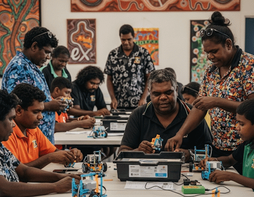
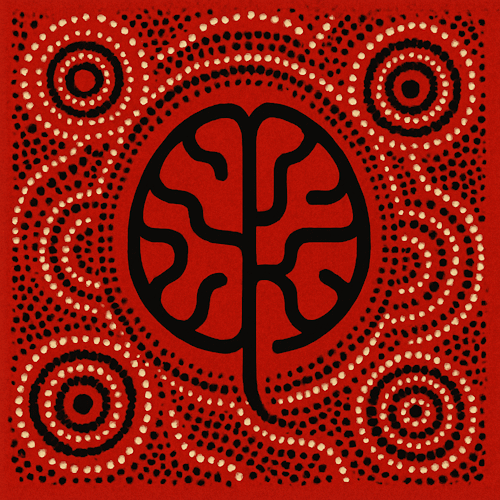

Berkeley robotics meetup
The League's monthly meet at Berkeley Community Hall. Families leave with a kit of their own. The classroom kit stays a charity asset.
This is the same Sunday session described above. One name, one room, one time.
The Just Us League Limited is a registered charity based in Wollongong. We run robotics and AI programs for young people across the Illawarra, and we work on language models that help communities hold onto their own stories.
An Illawarra charity. Robots on the floor. Kits on kitchen tables. Written arrangements so the work outlasts any one invoice.

The Just Us League Limited (ABN 50 603 437 467) is a registered charity. After that first mention, we go by Just Us League, or the League.
We exist for families who can't buy a robot, for students who need a sensor on a chassis rather than a slide in a lecture, and for a region that shouldn't have to leave the Illawarra to touch this work.
We do two quite different things. Robotics access: the monthly meet, kits that go home, a classroom kit that stays. And, through our Australian AI Society program, language models for Aboriginal languages and stories, built with permission.
We run a monthly robotics meet at Berkeley Community Hall in Wollongong, 1:30 to 3:00. We've run one every month since January 2025, see more at the monthly meet page.
Families who come to a monthly meet are given a robotics kit to keep. Those kits go home for good.
The VEX IQ classroom (robots, a field, and sensors) is a charity asset on permanent loan. It is there again next month.
Finding a robotics program that's real, local, and safe is a big ask. We ask that parents/carers be present and engage as a family activity (we can't currently accomodate drop-offs).
Just Us League runs a robotics and AI meet on a Sunday afternoon at Berkeley Community Hall in Wollongong. We've been running them since January 2025.
Families who come along are given a robotics kit to keep. We've given kits to more than 15 Illawarra families so far. The session uses a full VEX IQ classroom on the floor: robots, a field, sensors, and a written syllabus. That classroom belongs to the charity and stays put, so it's there again next month.
A robot is a machine students build, code, and run on a field. Bumper switches and gyros give it touch and heading. Vision sensors are why it can do more than drive until it hits something. AI, when we use it, is a tool doing a task, with a person still in charge.
Nobody has to already be into robots. All skill levels are welcome.
These are part of the League, not organisations we work alongside.
The League's monthly meet at Berkeley Community Hall. Families leave with a kit of their own. The classroom kit stays a charity asset.
This is the same Sunday session described above. One name, one room, one time.
Our own program for the AI half of the work. It is not a partner. You can read more at aisoc.au.
The quieter part of what we do lives here: language models for Aboriginal languages and stories, on terms communities set.

Through our Australian AI Society program, Just Us League works on language models for Aboriginal languages and stories, shared with permission by the communities they belong to.
The aim is simple: knowledge held in a form communities can actually reach and use, on terms they set. Communities decide what goes in, what stays out, and what comes back out again. Restricted knowledge stays restricted. Nothing is published without agreement.
Cultural knowledge belongs to the communities it comes from. We're custodians of a technical process, not owners of the material. This work moves slowly, and it should.
If you'd like to talk about it, write to service@jul.org.au.
A partner is an organisation with its own governance that we've agreed something with. Our own programs are listed above.
Has ongoing use of a Stereolabs ZED 2i stereo camera, a depth camera students use on builds. The camera stays ours.
Works with us on system design and educational frameworks.
Visit expert.org.auWrite to service@jul.org.au. Come and see a Sunday if you can. The robots are on the floor.
The Just Us League Limited · ABN 50 603 437 467 · Wollongong, Illawarra